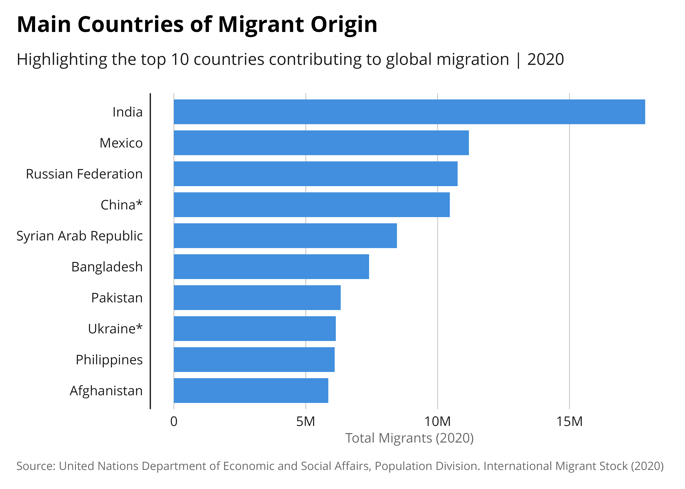

Saving lives and protecting people on the move,
Driving solutions to displacement,
Facilitating pathways for regular migration.
iomthemes R package aims at simplifying the creation of data visualizations and data stories. This package offers a comprehensive ggplot2 theme, including built-in customization and color palettes. It is designed to quickly align reproducible plots with IOM Visual Branding Recommendations.
Installation
This package is not yet available on CRAN.
Retrieve the development version from Github using the pak package:
install.packages("pak")
pak::pkg_install("iom/iomthemes")Usage
After loading the iomthemes package, you can apply the theme to any ggplot2 chart, by simply either adding a specific color from one the palette or use one of the color scaling functions and theme_iom() at the end of your plot.
Below is an example using the excel demo dataset from UNDESA bundled within the package.
library(tidyverse)
library(iomthemes)
readxl::read_excel(system.file(
"undesa_pd_2020_ims_stock_by_sex_destination_and_origin.xlsx",
package = "iomthemes"),
sheet = "Table 1", skip = 9) |>
## Getting clean variable names
janitor::clean_names() |>
dplyr::rename("total.2020"="x2020_14")|>
# Add ISO2 country code to identify the country level records
dplyr::mutate(
origin.iso2 = countrycode::countrycode(
location_code_of_origin,
origin = "un",
destination = "iso2c"),
destination.iso2 = countrycode::countrycode(
location_code_of_destination,
origin = "un",
destination = "iso2c")) |>
# Filter out rows where 'origin.iso2' and 'origin.iso2' is NA (missing)
# We do so to keep only country level records - filter out region subtotal
filter( !(is.na(origin.iso2)) ) |>
filter( !(is.na(destination.iso2)) ) |>
# Group the data by country of origin
group_by(region_development_group_country_or_area_of_origin) |>
# Summarize the total number of migrants for the year 2020 & remove NA!
summarise(total_migrants_2020 = sum(total.2020, na.rm = TRUE)) |>
# Arrange the summarized data in descending order of total migrants
arrange(desc(total_migrants_2020)) |>
# Select the top 10 countries of origin with the highest number of migrants
slice_head(n = 10) |>
ggplot(
aes(x = reorder(region_development_group_country_or_area_of_origin,
total_migrants_2020),
y = total_migrants_2020)) +
# Define it as a bar chart and apply IOM color palette
geom_bar(stat = "identity",
## Apply IOM color palette!
fill = iomthemes::iom_pal(n = 1, name= "pal_blue"),
width = 0.8) +
# Flip the chart to make it more legible
coord_flip() +
## Format the labels for the x axis
scale_y_continuous(
labels = scales::label_number(scale_cut = scales::cut_short_scale())) +
labs(
title = "Main Countries of Migrant Origin",
subtitle = "Highlighting the top 10 countries contributing to global
migration | 2020",
x = "Country of Origin",
y = "Total Migrants (2020)",
caption = "Source: United Nations Department of Economic and Social Affairs,
Population Division. International Migrant Stock (2020)") +
## and apply IOM theme
iomthemes::theme_iom(grid = "X", axis = "Y", axis_title = "X")
You can explore examples of iomthemes in action through the package vignette.
This package can and should be used in conjunction with {iomdown} to make reproducible reports and {iomquarto} to develop web pages, presentation and data scrolly-telling.
Contribution and Code of Conduct
Contributions to iomthemes are highly valued. To ensure a welcoming and inclusive community, we follow our Contributor Code of Conduct.
If you have suggestions, uncover bugs, or envision new features, kindly submit an issue on GitHub.
To contribute code, do not hesitate to fork the repository and create a pull request. Note that the package is maintained with Fusen package. All functions are document in dev/fusen_dev.Rmd
License
This package is distributed under the MIT License.
Acknowledgements
This package build on the Open Source work done from many contributors.
Credits goes to the work from my former colleague, Cedric Vidonne, the main author of unhcrthemes.